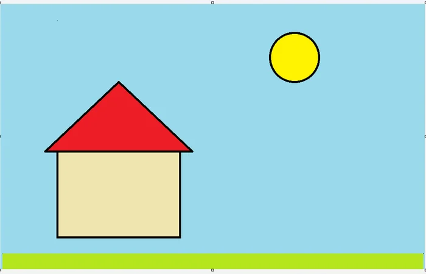

<!doctype html>
<html lang="ro">
<head>
<meta charset="utf-8">
<meta name="viewport" content="width=device-width, initial-scale=1, viewport-fit=cover">
<title>Lecția 24, clasa a V-a: Ce este un algoritm. Algoritmi din viața de zi cu zi</title>
<meta name="description" content="Lecția 24, clasa a V-a: afli ce este un algoritm (pașii, în ordine, care duc la un rezultat) și cine îl face (executantul); exersezi cu un robot din pagină care face exact ce scrie: ordinea pașilor, pasul care lipsește, instrucțiunea neclară; apoi, la calculator, tu ești robotul, în Paint.">
<link rel="preconnect" href="https://fonts.googleapis.com">
<link rel="preconnect" href="https://fonts.gstatic.com" crossorigin>
<link rel="stylesheet" href="https://fonts.googleapis.com/css2?family=Fredoka:wght@500;600&family=Nunito+Sans:wght@400;600;700&family=JetBrains+Mono:wght@500&display=swap&subset=latin-ext">
<link rel="stylesheet" href="../../../jocuri/_motor/motor.css">
<style>
:root{
  --desk:#EEF3F1; --paper:#FFFFFF; --paper2:#F3F8F6; --line:#CFDDD7;
  --ink:#15211D; --ink2:#4B5F58; --accent:#0B5CAD; --accentInk:#FFFFFF; --sel:#D6E6F8;
  --mark:#FFE07A; --markInk:#15211D; --ok:#1E7A46; --okbg:#E0F2E6; --bad:#B8362E; --badbg:#FAE4E2;
  --fd:"Fredoka","Segoe UI",system-ui,sans-serif; --fb:"Nunito Sans","Segoe UI",system-ui,sans-serif; --fm:"JetBrains Mono",Consolas,monospace;
}
@media (prefers-color-scheme:dark){:root:not([data-theme="light"]){
  --desk:#0F1714; --paper:#17221E; --paper2:#1E2B26; --line:#33453E;
  --ink:#E7F0EC; --ink2:#AEC0B8; --accent:#7DB8F2; --accentInk:#0F1714; --sel:#24384D;
  --mark:#EDCB63; --markInk:#15211D; --ok:#6CCB8F; --okbg:#18301F; --bad:#FF877B; --badbg:#3A1E1B;
}}
:root[data-theme="dark"]{
  --desk:#0F1714; --paper:#17221E; --paper2:#1E2B26; --line:#33453E;
  --ink:#E7F0EC; --ink2:#AEC0B8; --accent:#7DB8F2; --accentInk:#0F1714; --sel:#24384D;
  --mark:#EDCB63; --markInk:#15211D; --ok:#6CCB8F; --okbg:#18301F; --bad:#FF877B; --badbg:#3A1E1B;
}
/* tema: cartonașele unui algoritm, cu pașii numerotați */
.banda{display:flex;align-items:center;gap:8px;padding:7px 12px;white-space:nowrap;overflow:hidden;background:var(--paper2);border-bottom:2px solid var(--accent)}
.banda .bd-c{flex:none;font-size:.74rem;font-weight:600;color:var(--ink);background:var(--paper);border:1px solid var(--line);border-left:4px solid var(--accent);border-radius:6px;padding:2px 8px}
.banda .bd-z{flex:0 1 auto;min-width:0;overflow:hidden;text-overflow:ellipsis;font-family:var(--fm);font-size:.72rem;color:var(--ink2)}
h1,h2{font-weight:600;letter-spacing:0}
code{font-family:var(--fm);font-size:.9em}
ol.pasi-alg{margin:.3em 0 .3em 1.3em;padding:0}
ol.pasi-alg li{margin:.12em 0}
/* „Acum la calculator” (regula 10): gesturi mici, reale, imediat după pas */
.acum{border:2px dashed var(--accent);border-radius:10px;background:var(--paper2);padding:8px 12px;margin:12px 0 4px}
.acum .lbl{font-family:var(--fd);font-weight:600;color:var(--accent);margin-bottom:2px}
.acum ol{margin:.2em 0 .2em 1.2em;padding:0}
.acum li{margin:.15em 0}
.acum li.tarziu{list-style:none;margin:.5em 0 .1em -1.2em;padding-top:5px;border-top:1px dashed var(--line)}
.acum code{white-space:nowrap;font-size:.8em}
details.verif{margin-top:.4em;font-size:.95rem}
details.verif summary{cursor:pointer;font-weight:700;color:var(--accent);min-height:32px;padding:4px 0}
/* figurile desenate de simulator în „Uite cum” */
figure.ex-fig{margin:8px 0}
figure.ex-fig figcaption{font-size:.9rem;color:var(--ink2);margin-top:4px}
/* legăturile din legenda fotografiei (licența, sursa): ținte de atins ≥ 32 px */
.captura figcaption a.lic{display:inline-block;padding:8px 0}
</style>
</head>
<body>
<script src="../../../jocuri/_motor/motor.js"></script>
<script src="../../_sim/executant.js"></script>
<script>
/* Lecția 24, clasa a V-a (M4): „Ce este un algoritm. Algoritmi din viața de zi cu zi” — predare, prima lecție din V-U5
   („Algoritmi. Gândesc pas cu pas”). Legea: LearningHub\_campaign\revizuire_completa_2026_09\00_GHID_LECTII.md. Sursele: surse.md.
   Activitatea profesorului (Proiectul_unitatii_V-U5 / activități V/24): „„Robotul din clasă": un elev execută literal instrucțiunile
   date de colegi pentru o sarcină simplă (de exemplu, desenarea unei figuri pe tablă). Se descoperă nevoia de instrucțiuni clare și
   complete.” La ora simultană nu există colegi și tablă: „robotul din clasă” devine EXECUTANTUL din pagină (lectii/_sim/executant.js,
   extensie NOUĂ, proprietar lecția aceasta), care face exact ce scrie pe cartonașe; la calculator, elevul e robotul, în Paint.
   Definiția: manualul de a V-a A1226 (p. 54): „Algoritmul reprezintă o succesiune de operații aflate într-o ordine bine precizată
   pentru rezolvarea unei probleme sau realizarea unei sarcini.” — spusă în cuvinte de copil în pasul 2.
   Granița (V/25, vecinul din val): proprietățile NU se numesc; „clar” și „complet” doar în cuvinte obișnuite. Fără date, variabile,
   decizii. Trimiterile la pași se fac după numărul din bara de jos (P1 = „La ce folosește”). */
const fig=(f,w,h,alt,cap)=>`<figure class="captura"><a href="img/${f}" target="_blank"></a><figcaption>${cap}</figcaption></figure>`;
/* '!…' = punctul de la sfârșitul orei */
const ACUM=(...p)=>`<div class="acum" role="note"><div class="lbl">Acum la calculator, în Paint-ul adevărat</div><ol>${p.map(x=>x.startsWith('!')?`<li class="tarziu">${x.slice(1)}</li>`:`<li>${x}</li>`).join('')}</ol></div>`;

/* ---- cartonașele (instrucțiunile executantului; textul lor îl scrie Executant.text) ---- */
const PUNE={f:'pune'},RIDICA={f:'ridica'};
const M=(dir,n)=>({f:'muta',dir,n});
const CUB=c=>({f:'cub',c});
const NECLAR=(text,de_ce,variante)=>({f:'neclar',text,de_ce,variante});
const X=o=>Object.assign({t:'robot',muta:true,sterge:true},o);   // tipul = Executant.tipuri.executant (cheia „robot”: cuvântul „executant” se predă abia la P3)
const T_TERMINA={k:'termina',ce:'Robotul face toți pașii, până la ultimul'};   // REPARAT 02.11.2026 (J1-J): la V/25 „se oprește” = lucru bun

/* lumile exercițiilor (tabla: x 0…8, y 0…5, y crește în jos; drum: pătrățele 0…w-1) */
const TABLA=(x,y)=>({w:8,h:5,start:{x,y}});
const HARTA_P4={w:6,h:5,casa:{x:0,y:4},start:{x:0,y:4},scoala:{x:4,y:1},
  cladiri:[[2,4,'blocul'],[3,4,'blocul'],[2,2,'parcul'],[3,2,'parcul'],[5,3,'blocul']]};
const HARTA_AT={w:7,h:5,casa:{x:0,y:4},start:{x:0,y:4},scoala:{x:6,y:0},
  cladiri:[[1,2,'blocul'],[2,2,'blocul'],[1,3,'blocul'],[2,3,'blocul'],[4,1,'parcul'],[4,2,'parcul'],[5,2,'parcul'],[5,4,'blocul']]};

/* ---- figurile din „Uite cum”: desenul robotului (simulatorul), nu o captură ---- */
const FIG_RIDICA=Executant.imagine({lume:'tabla',harta:TABLA(1,2),model:{segmente:[[1,2,5,2]]}},[PUNE,M('dreapta',2),RIDICA,M('dreapta',2)],
  {aria:'Tabla cu pătrățele: robotul a mers 4 pătrățele la dreapta, dar a tras linie doar pe primele 2; celelalte 2 au rămas punctate, gri',
   legenda:'Robotul a făcut exact ce scrie: a tras linie 2 pătrățele, a ridicat markerul, apoi a mers încă 2 pătrățele <b>fără</b> să deseneze. Linia punctată, gri, e ce voia autorul. <small>Desenul robotului din pagină.</small>'});
const FIG_NECLAR=Executant.imagine({lume:'tabla',harta:TABLA(1,2)},[PUNE,NECLAR('Mută markerul la dreapta.','nu scrie câte pătrățele',[{eticheta:'1 pătrățel',pasi:[M('dreapta',1)]},{eticheta:'4 pătrățele',pasi:[M('dreapta',4)]}])],
  {aria:'Tabla cu pătrățele: robotul stă la start; două linii punctate colorate arată unde ar putea ajunge: 1 pătrățel (cercul 1) sau 4 pătrățele (cercul 2)',
   legenda:'„Mută markerul la dreapta.” Felul 1: 1 pătrățel. Felul 2: 4 pătrățele. Robotul nu ghicește, deci stă pe loc. <small>Desenul robotului din pagină.</small>'});
const IMG={
  casa:`<figure class="captura"><a href="../m3-l19/img/desen-forme.webp" target="_blank"></a><figcaption>O casă din forme, ca la lecția 19: un dreptunghi și, deasupra, un triunghi. Acolo casa e în stânga și are culori, soare, cer și iarbă; tu o desenezi jos, la mijloc, iar culorile le alegi tu, la pasul 5. <small>Captură din Paint (Windows 11), de la lecția 19.</small></figcaption></figure>`,
  origami:fig('origami-catel.webp',634,409,'Instrucțiuni desenate pentru o față de cățel din hârtie: cinci căsuțe, de la STEP 1 la STEP 5; la pasul 1 un pătrat așezat pe colț, la pasul 5 fața cățelului, cu urechile','O față de cățel din hârtie îndoită (origami), desenată în 5 pași, în ordine. „STEP” înseamnă, în engleză, „pasul”. <small>Desen: Georgejem, <a class="lic" href="https://creativecommons.org/licenses/by-sa/4.0" target="_blank" rel="noopener">CC BY-SA 4.0</a>, <a class="lic" href="https://commons.wikimedia.org/wiki/File:Origami_Dog_Face_Instructions.png" target="_blank" rel="noopener">Wikimedia Commons</a>.</small>')
};

/* ---- „Acum la calculator” (după atelier, înainte de întrebări). FĂRĂ profesor, pe calculatorul comun.
   Faptele Paint: lecțiile 18, 19, 21 (afirmatii.json ale lor). Paint NU a fost pornit (aplicație din Magazin). ---- */
/* „Tu ești robotul” stă în aplicatieReala.intro (REPARAT 02.11.2026, J1-B): rândurile 1-6 ale listei sunt chiar Pasul 1-6 */
const LAB=[
  '<b>Pasul 1.</b> Pornește Paint: Start, scrie <code>pai</code>, clic pe Paint. E deja deschis, de la pasul <i>Algoritmul: pașii, în ordine, până la rezultat</i> (P2)? <b>Fișier</b> › <b>Nou</b>; dacă te întreabă ceva despre salvare, <b>Nu salvați</b>.',
  '<b>Pasul 2.</b> Din <b>Forme</b>, alege <b>Dreptunghi</b>. Vezi doar butonul <b>Forme</b>? Întâi clic pe el.',
  '<b>Pasul 3.</b> Desenează dreptunghiul jos, la mijlocul pânzei: apeși într-un colț, tragi în diagonală, lași. Acesta e peretele casei.',
  '<b>Pasul 4.</b> Din <b>Forme</b>, alege <b>Triunghi</b>. Desenează-l chiar deasupra dreptunghiului, cam cât e de lat: acesta e acoperișul.',
  '<b>Pasul 5.</b> Colorează casa.',
  '<b>Pasul 6.</b> Salvează (ca la lecția 18): <b>Fișier</b> › <b>Salvați ca</b> › <b>Imagine PNG</b>. Numele: numele, prenumele și clasa <b>ta</b>, legate cu liniuța de jos, apoi <code>_robot</code> (ca <code>Pop_Ana_5A_robot</code>, dar cu ale tale). În stânga, <b>Documente</b>; apoi <b>Salvare</b>. Scrie că există deja? <b>Nu</b> și adaugi o cifră la sfârșitul numelui.',
  '<b>Verifică-te:</b> la ce pas ai stat pe gânduri? <details class="verif"><summary>Deschide după ce ai terminat</summary><p>Cel mai probabil la <b>pasul 5</b>: ce culoare? Doar acoperișul sau și peretele? Cu ce instrument? Se poate face în multe feluri, deci robotul din pagină s-ar fi oprit acolo. Poate și la pasul 3: cât de mare?</p><p>Scrie în caiet pasul 5 așa încât să se poată face <b>într-un singur fel</b>. De exemplu: „Clic pe cercul Culoare 1, apoi pe roșu. Alege Umplere. Clic în interiorul triunghiului.” Dacă mai ai timp, fă-l așa.</p></details>',
  '<b>La sfârșitul orei</b> (chiar dacă n-ai terminat): X pe Paint; te întreabă „Salvați lucrul?”? <b>Nu salvați</b>. Ai salvat la pasul 6? Explorer: <b>Documente</b>, clic pe fișierul de azi, cel care se termină cu <code>_robot</code> (ca <code>Pop_Ana_5A_robot</code>; poate are și cifra ta), <kbd>Delete</kbd>. Felicitarea și afișul tău de la lecțiile 22 și 23 nu le atingi. Nu goli Coșul.'
];

JocMotor.porneste({
  cheie:'lectie_v_m4_l24',
  mod:'lectie',   // motorul în modul lecție: firimituri spre lectii/v/, „Lecția 24”, pasul real înainte de verificare
  titlu:'Ce este un algoritm. Algoritmi din viața de zi cu zi',
  marca:'Lecția <b>24</b> · clasa a V-a',
  h1:'Ce este un algoritm. Algoritmi din viața de zi cu zi',
  eticheta:'Lecții TIC',
  acasa:{href:'../../../hub/index.html',text:'LearningHub'},
  clasa:'a V-a', unitate:'V-U5', unitateTitlu:'Algoritmi. Gândesc pas cu pas',
  competente:['CS.2.1'], lectii:'24',
  ancoraText:'Din programă (CS.2.1, unitatea V-U5, lecția 24): Noțiunea de algoritm',
  intro:`<p><b>Ai nevoie de:</b> lecțiile 10 (Explorer: <kbd>Delete</kbd>), 18 (Paint: Start, <code>pai</code>; <b>Salvați ca</b> › <b>Imagine PNG</b>; X), 19 (<b>Forme</b>: apeși, tragi, lași), 21 (<b>Culoare 1</b>, <b>Umplere</b>) și 22 (numele fișierului, cu liniuța de jos).</p>`,
  cum:`<b>Cum lucrezi</b><ol><li>P1 de citit, apoi 4 pași scurți. După fiecare, exersezi cu robotul din pagină.</li><li>Atelierul: algoritmul unui steag, pentru robot.</li><li>La calculator: tu ești robotul, în Paint. Pe telefon: pe caietul cu pătrățele.</li><li>5 întrebări, pentru stele.</li></ol><p><b>Când mai sunt 10 minute din oră:</b> bara de jos › <b>P2</b>, ultimul punct din casetă; apoi treci la întrebări.</p>`,
  banda:'<span class="bd-c">1. Pune markerul pe tablă.</span><span class="bd-c">2. Mută markerul 3 pătrățele în sus.</span><span class="bd-z">3. …</span>',
  nivele:[
{t:'Ce este un algoritm. Algoritmi din viața de zi cu zi',final:true,lectii:[24],
 continuturi:['Noțiunea de algoritm'],
 obiectiv:'spui ce este un algoritm și cine îl face, apoi scrii pentru un robot pași clari și compleți, în ordinea bună.',
 pasi:[
  /* ---- pasul 1: la ce folosește (fără acțiuni): instrucțiunile scrise ca oricine să ajungă la același rezultat ---- */
  {t:'La ce folosește: pași scriși, ca oricine să reușească',
   text:`<p>Ai urmat vreodată o rețetă? Sau foaia din cutia unei jucării de montat, care arată cum o montezi? Cineva a scris pașii, unul după altul, ca <b>oricine</b> îi urmează să ajungă la același rezultat: prăjitura, jucăria montată, o figură din hârtie.</p>
<p>Azi afli cum se numesc astfel de pași și de ce trebuie scriși foarte exact. Uneori îi face un om. Alteori îi face un robot sau calculatorul, care nu ghicește nimic.</p>
${IMG.origami}`},
  /* ---- pasul 2: algoritmul (definiția din manual, spusă simplu) + trei exemple din programă / activitate: rețeta (ceaiul, exemplul
     programei), instrucțiunile de asamblare, drumul spre școală. Încearcă = instrucțiunile de asamblare amestecate (execuție). ---- */
  {t:'Algoritmul: pașii, în ordine, până la rezultat',
   text:`<p>Un <mark>algoritm</mark> e un șir de pași, puși într-o ordine anume, care rezolvă o problemă: duc la un rezultat. (Problema înseamnă aici ceva de rezolvat, de exemplu „Cum ajung la școală?”.) Fiecare pas scris e o <mark>instrucțiune</mark>.</p>
<p>Algoritmi din viața de zi cu zi:</p>
<ul><li><b>rețeta</b>: pașii prin care faci o mâncare sau un ceai;</li><li><b>instrucțiunile de asamblare</b>: pașii prin care montezi o jucărie sau un raft;</li><li><b>drumul spre școală</b>: pe unde mergi, în ce ordine.</li></ul>
<p>Pe scurt: o problemă, pașii, în ordine, apoi rezultatul.</p>`,
   exemplu:`<p><b>Problema:</b> vreau un ceai. <b>Pașii</b>, în ordine:</p>
<ol class="pasi-alg"><li>Fierbi apă în fierbător (cu un adult lângă tine).</li><li>Pui un plic de ceai într-o cană.</li><li>Torni apa fierbinte în cană.</li><li>Aștepți 4 minute, apoi scoți plicul.</li></ol>
<p><b>Rezultatul:</b> ceaiul.</p>
${ACUM('Pornește Paint: Start, scrie <code>pai</code>, clic pe Paint. Ai făcut 3 pași, în ordine, și ai ajuns la rezultat: Paint e deschis. Ai urmat un algoritm.','Pe telefon nu ai Paint: sari peste casetele „Acum la calculator”.','!<b>La sfârșitul orei</b> (chiar dacă n-ai terminat), nu acum: revii aici (<b>P2</b>). X pe Paint; te întreabă „Salvați lucrul?”? <b>Nu salvați</b>. Ai salvat casa (pasul 6 de la calculator)? Explorer: <b>Documente</b>, clic pe fișierul de azi, cel care se termină cu <code>_robot</code> (ca <code>Pop_Ana_5A_robot</code>; poate are și cifra ta), <kbd>Delete</kbd>. Felicitarea și afișul tău de la lecțiile 22 și 23 nu le atingi. Nu goli Coșul.')}`,
   altfel:`<p>Gândește-te la un joc de-a „comoara”: pe un bilet scrie „3 pași spre ușă, apoi 2 spre fereastră, apoi te uiți sub covor”. Biletul e algoritmul. Problema e „Unde e comoara?”, iar rezultatul e comoara găsită, dacă faci pașii în ordine.</p>`,
   incearca:X({lume:'turn',q:'Instrucțiunile de asamblare pentru turnul din stânga (<b>Modelul</b>) s-au amestecat. Pune-le în ordine: cu <b>↑</b> și <b>↓</b> muți un pas mai sus sau mai jos. Robotul din pagină face pașii de sus în jos. Apasă <b>▶ Pornește robotul</b> ca să vezi turnul lui, apoi <b>Verifică</b>.',
    harta:{cutie:['rosu','galben','verde','albastru']},model:{turn:['albastru','verde','galben','rosu']},
    alg:[CUB('galben'),CUB('rosu'),CUB('albastru'),CUB('verde')],sterge:false,
    teste:[T_TERMINA,{k:'turn',ce:'Turnul robotului e la fel ca modelul, de jos în sus'}],
    sol:[CUB('albastru'),CUB('verde'),CUB('galben'),CUB('rosu')],gresit:[CUB('galben'),CUB('rosu'),CUB('albastru'),CUB('verde')],
    ajutor:'Primul cub pus stă jos, pe masă. Care cub e jos în model?',
    why:'Cubul de jos se pune primul, cel de sus ultimul: ordinea pașilor dă turnul.'}),
   inca:[
    {t:'order',q:'Pune în ordine pașii algoritmului „Mă spăl pe mâini”.',items:['Ud mâinile cu apă','Pun săpun','Frec bine mâinile cu săpun','Clătesc mâinile cu apă','Șterg mâinile cu prosopul'],
     ajutor:'Ce faci primul, ca săpunul să facă spumă?',why:'Întâi uzi mâinile, apoi pui săpun și freci; clătești spuma și abia la sfârșit le ștergi.'}
   ]},
  /* ---- pasul 3: executantul (cine face pașii: omul, robotul, calculatorul) face EXACT ce scrie; instrucțiunea = un pas scris.
     Uite cum: markerul ridicat prea devreme (altă situație decât în Încearcă: acolo lipsește „Pune markerul”). ---- */
  {t:'Executantul face exact ce scrie',
   text:`<p>Cine face pașii unui algoritm se numește <mark>executant</mark>: un om, un robot sau calculatorul.</p>
<p>Un om mai ghicește ce ai vrut să spui. Robotul din pagină face instrucțiunile <b>exact</b> cum sunt scrise, una după alta, de sus în jos. Dacă lipsește o instrucțiune, n-o pune el. Nici calculatorul nu ghicește ce ai vrut.</p>
<p>Robotul ține un marker pe o tablă cu pătrățele. Cu markerul pe tablă, unde merge trage o linie. Cu markerul ridicat, doar se mută.</p>`,
   exemplu:`<p>Algoritmul: „Pune markerul pe tablă. Mută markerul 2 pătrățele la dreapta. Ridică markerul de pe tablă. Mută markerul 2 pătrățele la dreapta.”</p>${FIG_RIDICA}
${ACUM('În Paint, fără să alegi nimic, apasă pe pânză, trage puțin spre dreapta, apoi lasă. Paint a făcut ce face instrumentul ales acum (de obicei Pensule, o linie groasă; poate altul, rămas de la colegul de dinainte). N-ai spus ce să folosească, iar el n-a ghicit.','Apasă săgeata ↶ de sus (<b>Anulați</b>): ce ai făcut dispare.')}`,
   altfel:`<p>E ca la ora de sport, când profesorul spune „Trei pași înainte!”: faci exact trei pași, nu patru și nici doi. Robotul e și mai exact: dacă profesorul uită să spună „Întoarce-te!”, el nu se întoarce singur, chiar dacă toți ceilalți s-au întors.</p>`,
   incearca:X({lume:'tabla',q:'Robotul trebuie să tragă linia punctată, gri. Apasă <b>▶ Pornește robotul</b>: tabla rămâne goală. Atinge cartonașul care lipsește (se pune la capăt), mută-l unde trebuie cu <b>↑</b>, apoi <b>Verifică</b>.',
    harta:TABLA(1,3),model:{segmente:[[1,3,5,3]]},
    alg:[M('dreapta',4)],cartonase:[PUNE,RIDICA],
    teste:[T_TERMINA,{k:'desen',ce:'Pe tablă e linia din model, nimic în plus'}],
    sol:[PUNE,M('dreapta',4)],gresit:[M('dreapta',4),PUNE],
    ajutor:'Cu markerul ridicat, robotul doar se mută. Ce trebuie să facă ÎNAINTE să meargă?',
    why:'Cu markerul pus pe tablă înainte de mers, fiecare pătrățel mers lasă linie. Robotul n-a pus singur markerul: l-ai scris tu.'}),
   inca:[
    X({lume:'tabla',q:'Robotul trebuie să deseneze colțul punctat: o linie în jos, apoi una la dreapta. Lipsește o instrucțiune. Atinge cartonașul potrivit, apoi <b>Verifică</b>.',
     harta:TABLA(2,1),model:{segmente:[[2,1,2,4],[2,4,5,4]]},
     alg:[PUNE,M('jos',3)],cartonase:[M('dreapta',3),M('stanga',3),M('dreapta',2),PUNE],
     teste:[T_TERMINA,{k:'desen',ce:'Pe tablă e colțul din model, nimic în plus'}],
     sol:[PUNE,M('jos',3),M('dreapta',3)],gresit:[PUNE,M('jos',3),M('stanga',3)],
     ajutor:'Numără pătrățelele liniei de jos și uită-te încotro merge.',
     why:'După linia în jos, robotul are nevoie de încă o instrucțiune: 3 pătrățele la dreapta.'})
   ]},
  /* ---- pasul 4: ordinea (manualul A1226 p. 56: „ordinea operațiilor fiind foarte importantă”); Încearcă pe hartă: aceiași pași,
     altă ordine, alt rezultat (robotul se oprește în fața blocului) ---- */
  {t:'Ordinea pașilor contează',
   text:`<p>Aceiași pași, puși în altă ordine, pot duce la alt rezultat. Executantul face pașii în ordinea în care sunt scriși: de sus în jos.</p>
<p>De aceea, când scrii un algoritm, te întrebi la fiecare pas: „Se poate face <b>acum</b>? Ce trebuie să fie gata înainte?”</p>`,
   exemplu:`<p>Te îmbraci de dimineață: 1. Pui șosetele. 2. Încalți pantofii. Dacă le schimbi ordinea, încalți întâi pantofii și apoi nu mai ai cum să pui șosetele pe picior. Aceiași doi pași, alt rezultat.</p>`,
   altfel:`<p>E ca atunci când pui masa: întâi fața de masă, apoi farfuriile. Dacă pui întâi farfuriile, fața de masă ajunge peste ele. Sunt aceiași doi pași, dar masa arată altfel.</p>`,
   incearca:X({lume:'drum',q:'Robotul pleacă de acasă spre școală. Pașii lui sunt buni, dar sunt în ordinea greșită. Apasă <b>▶ Pornește robotul</b> și vezi unde se oprește. Schimbă ordinea cu <b>↑</b> și <b>↓</b>, apoi <b>Verifică</b>.',
    harta:HARTA_P4,model:{la:{x:4,y:1}},
    alg:[M('dreapta',4),M('sus',3)],sterge:false,
    teste:[T_TERMINA,{k:'ajunge',ce:'Robotul se oprește la școală'}],
    sol:[M('sus',3),M('dreapta',4)],gresit:[M('dreapta',4),M('sus',3)],
    ajutor:'Pe ce rând de pătrățele nu e niciun bloc până la școală: pe cel de jos sau pe cel de sus?',
    why:'Întâi în sus, apoi la dreapta: pe drumul de sus nu e niciun bloc. Aceiași doi pași, în altă ordine, au dus la școală.'}),
   inca:[
    {t:'order',q:'Pune în ordine pașii algoritmului „Plec la școală cu ghiozdanul”.',items:['Pun caietele în ghiozdan','Închid fermoarul ghiozdanului','Îmi pun ghiozdanul în spate','Ies din casă'],
     ajutor:'Ce trebuie să fie gata înainte să pui ghiozdanul în spate?',why:'Caietele intră întâi, apoi închizi ghiozdanul ca să nu cadă nimic; abia apoi îl pui în spate și pleci.'}
   ]},
  /* ---- pasul 5: instrucțiuni clare și complete (în cuvinte obișnuite; FĂRĂ denumirile proprietăților — V/25): o instrucțiune care
     se poate face în mai multe feluri oprește robotul; niciun pas nu lipsește. Manualul A1232 p. 56: „un robot … nu va ști ce să facă” ---- */
  {t:'Instrucțiuni clare și complete',
   text:`<p>O instrucțiune bună spune exact ce se face; unde e nevoie, spune <b>cât</b>, <b>încotro</b>, <b>cu ce</b>. Așa se poate face într-un singur fel: e <b>clară</b>.</p>
<p>„Mută markerul la dreapta.” Cât? 1 pătrățel? 4? Se poate face în mai multe feluri, deci robotul din pagină se oprește. Un om ar alege ceva, poate altceva decât voiai tu.</p>
<p>Iar un algoritm e <b>complet</b> când nu-i lipsește niciun pas: executantul nu-i adaugă singur.</p>`,
   exemplu:`${FIG_NECLAR}
${ACUM('În Paint, fă instrucțiunea „Desenează o formă.” Din <b>Forme</b> poți alege Dreptunghi, Oval, Triunghi, o stea… Alege tu una și desenează-o: apeși, tragi, lași. Robotul din pagină s-ar fi oprit aici.','Apasă săgeata ↶ de sus (<b>Anulați</b>) de câte ori e nevoie, până se golește pânza.')}`,
   altfel:`<p>E ca atunci când mama te trimite „să iei pâine”. Ce fel de pâine? Câte? De unde? Dacă îți spune „O pâine albă, de la magazinul din colț”, aduci exact ce voia ea.</p>`,
   incearca:X({lume:'tabla',q:'Robotul trebuie să deseneze pătratul punctat, dar o instrucțiune nu e clară și robotul se oprește la ea. Scoate-o (<b>✕</b>), atinge cartonașul care spune exact cât (se pune la capăt) și urcă-l cu <b>↑</b> unde era cea neclară. Apoi <b>Verifică</b>.',
    harta:TABLA(2,1),model:{segmente:[[2,1,4,1],[4,1,4,3],[4,3,2,3],[2,3,2,1]]},
    alg:[PUNE,M('dreapta',2),NECLAR('Mută markerul în jos.','nu scrie câte pătrățele',[{eticheta:'2 pătrățele',pasi:[M('jos',2)]},{eticheta:'4 pătrățele',pasi:[M('jos',4)]}]),M('stanga',2),M('sus',2)],
    cartonase:[M('jos',2),M('jos',3),PUNE],
    teste:[T_TERMINA,{k:'desen',ce:'Pe tablă e pătratul din model, nimic în plus'}],
    sol:[PUNE,M('dreapta',2),M('jos',2),M('stanga',2),M('sus',2)],gresit:[PUNE,M('dreapta',2),M('jos',3),M('stanga',2),M('sus',2)],
    ajutor:'Latura pătratului are tot atâtea pătrățele ca latura de sus. Câte?',
    why:'„Mută markerul 2 pătrățele în jos.” se poate face într-un singur fel. Cu ea, pașii robotului închid pătratul.'}),
   inca:[
    X({lume:'turn',q:'Robotul construiește turnul din stânga (<b>Modelul</b>), dar o instrucțiune nu spune ce cub să pună. Scoate-o (<b>✕</b>), pune în locul ei cartonașul potrivit (cu <b>↑</b>), apoi <b>Verifică</b>.',
     harta:{cutie:['rosu','verde','galben','albastru']},model:{turn:['rosu','verde','galben']},
     alg:[CUB('rosu'),NECLAR('Pune un cub.','nu scrie ce culoare',[{eticheta:'cubul verde',pasi:[CUB('verde')]},{eticheta:'cubul albastru',pasi:[CUB('albastru')]}]),CUB('galben')],
     cartonase:[CUB('verde'),CUB('albastru')],
     teste:[T_TERMINA,{k:'turn',ce:'Turnul robotului e la fel ca modelul, de jos în sus'}],
     sol:[CUB('rosu'),CUB('verde'),CUB('galben')],gresit:[CUB('rosu'),CUB('albastru'),CUB('galben')],
     ajutor:'Ce culoare are al doilea cub de jos, în model?',
     why:'„Pune cubul verde.” spune exact ce cub: robotul îl pune fără să ghicească.'})
   ]}
 ],
 /* atelierul: algoritmul steagului, din cartonașe (cu cartonașe în plus și unul neclar). Rezultat, nu drum (regula 29): testul
    citește desenul de la sfârșit, nu ordinea în care s-au tras liniile. */
 atelier:X({lume:'tabla',titlu:'Atelier: algoritmul steagului',
  intro:`<p><strong>Sarcina:</strong> robotul trebuie să deseneze <b>steagul</b> punctat de pe tablă: bățul și pânza steagului.</p>
<ol><li>Atinge cartonașele, în ordinea în care vrei să le facă robotul. Cu <b>↑</b> <b>↓</b> muți un pas, cu <b>✕</b> îl scoți.</li>
<li>Apasă <b>▶ Pornește robotul</b> și urmărește ce desenează.</li>
<li>Apoi <b>Verifică</b>. Printre cartonașe sunt și unele de care nu ai nevoie.</li></ol>
<p><b>Dacă mai ai timp</b>, după ce steagul e <b>Corect</b>: <b>Încă un exercițiu</b> are drumul spre școală și un turn.</p>`,
  q:'Algoritmul steagului: robotul pleacă de la Start.',
  harta:TABLA(2,4),model:{segmente:[[2,4,2,1],[2,1,4,1],[4,1,4,2],[4,2,2,2]]},
  alg:[],
  cartonase:[PUNE,RIDICA,M('sus',3),M('dreapta',2),M('jos',1),M('stanga',2),M('dreapta',3),
   NECLAR('Desenează steagul.','nu scrie cât de mare e și în ce parte',[{eticheta:'steagul spre dreapta',pasi:[PUNE,M('sus',3),M('dreapta',2),M('jos',1),M('stanga',2)]},{eticheta:'steagul spre stânga',pasi:[PUNE,M('sus',3),M('stanga',2),M('jos',1),M('dreapta',2)]}])],
  teste:[T_TERMINA,{k:'desen',ce:'Pe tablă e steagul din model, nimic în plus'}],
  sol:[PUNE,M('sus',3),M('dreapta',2),M('jos',1),M('stanga',2)],gresit:[PUNE,M('sus',3),M('dreapta',3),M('jos',1),M('stanga',2)],
  ajutor:'Testul care nu trece îți spune ce e greșit. Liniile roșii de pe tablă sunt în plus; cele punctate, gri, lipsesc. Poți trage liniile și în altă ordine: contează ca desenul de la sfârșit să fie la fel cu modelul.',
  why:'Bățul (3 pătrățele în sus) și pânza (2 la dreapta, 1 în jos, 2 la stânga): fiecare instrucțiune spune exact cât și încotro, iar niciuna nu lipsește.',
  inca:[
   X({lume:'drum',q:'Fă algoritmul drumului de <b>casa</b> la <b>școala</b>, din cartonașe. Robotul nu intră în blocuri și nici în parc. Merge mai multe drumuri: alege unul.',
    harta:HARTA_AT,model:{la:{x:6,y:0}},alg:[],
    cartonase:[M('dreapta',3),M('dreapta',6),M('sus',4),M('sus',2),
     NECLAR('Mergi spre școală.','nu scrie pe unde și cât',[{eticheta:'întâi în sus, apoi la dreapta',pasi:[M('sus',4),M('dreapta',6)]},{eticheta:'întâi la dreapta, până dă de bloc',pasi:[M('dreapta',6),M('sus',4)]}])],
    teste:[T_TERMINA,{k:'ajunge',ce:'Robotul se oprește la școală'}],
    sol:[M('sus',4),M('dreapta',6)],gresit:[M('dreapta',6),M('sus',4)],
    ajutor:'Urmărește cu degetul un drum pe pătrățelele libere (nu prin blocuri sau prin parc), de la casă la școală. Numără pătrățelele pe fiecare bucată dreaptă.',
    why:'Fiecare cartonaș spune încotro și câte pătrățele. Drumul tău ocolește blocurile și parcul și se oprește la școală.'}),
   X({lume:'turn',q:'Instrucțiunile de asamblare pentru turnul din stânga (<b>Modelul</b>): fă-le tu, din cartonașe.',
    harta:{},model:{turn:['galben','albastru','rosu','verde']},alg:[],
    cartonase:[CUB('rosu'),CUB('galben'),CUB('verde'),CUB('albastru'),CUB('portocaliu'),CUB('mov'),
     NECLAR('Pune un cub.','nu scrie ce culoare',[{eticheta:'cubul galben',pasi:[CUB('galben')]},{eticheta:'cubul mov',pasi:[CUB('mov')]}])],
    teste:[T_TERMINA,{k:'turn',ce:'Turnul robotului e la fel ca modelul, de jos în sus'}],
    sol:[CUB('galben'),CUB('albastru'),CUB('rosu'),CUB('verde')],gresit:[CUB('galben'),CUB('rosu'),CUB('albastru'),CUB('verde')],
    ajutor:'Începe cu cubul de jos din model.',
    why:'Patru instrucțiuni, de la cubul de jos la cel de sus, fiecare cu culoarea ei.'})
  ]}),
 qs:[
  {t:'choice',q:'Care dintre acestea este un algoritm?',o:['Pașii de pe un plic de supă: fierbi apa, torni plicul, amesteci','Lista de cumpărături de pe frigider: pâine, lapte, mere și ouă','Orarul de luni al clasei: română, matematică, sport, engleză','Un desen cu o casă și un copac, făcut în Paint la ora trecută'],ok:0,
   ajutor:'Un algoritm are pași, în ordine, care duc la un rezultat.',why:'Doar pe plic sunt pași, în ordine, care duc la un rezultat: supa. Lista spune ce cumperi, orarul ce ore ai, iar desenul e un rezultat, nu niște pași.'},
  {t:'choice',q:'Robotul de pe tablă primește algoritmul: „Pune markerul pe tablă. Mută markerul 2 pătrățele în sus. Mută markerul 3 pătrățele la dreapta.” Ce desenează?',o:['Un colț: o linie de 2 în sus, apoi una de 3 la dreapta','Un pătrat, cu latura de 2 pătrățele','Nimic: tabla rămâne goală, pentru că markerul nu atinge tabla','O singură linie, de 5 pătrățele, toată la dreapta'],ok:0,
   ajutor:'Fă pașii cu degetul pe un caiet cu pătrățele, exact cum sunt scriși.',why:'Markerul e pe tablă, deci fiecare pas lasă o linie: 2 pătrățele în sus, apoi 3 la dreapta. Pentru un pătrat ar mai trebui pași.'},
  {t:'order',q:'Pune în ordine pașii algoritmului „Plantez o sămânță într-un ghiveci”.',items:['Umplu ghiveciul cu pământ','Fac o gropiță în pământ','Pun sămânța în gropiță','Acopăr sămânța cu pământ','Ud pământul'],
   ajutor:'Ce trebuie să fie gata înainte să pui sămânța?',why:'Fără pământ nu ai unde face gropița; sămânța intră în gropiță, apoi o acoperi și abia la urmă uzi.'},
  {t:'choice',q:'Robotul din lecție primește instrucțiunea „Mută markerul în sus.” Ce face?',o:['Se oprește: nu scrie câte pătrățele să meargă','Merge un singur pătrățel în sus și se oprește','Merge în sus până ajunge la marginea tablei','Merge câte pătrățele crede el că ai vrut tu'],ok:0,
   ajutor:'Se poate face instrucțiunea într-un singur fel?',why:'„În sus”, dar cât? Se poate face în mai multe feluri, iar robotul nu ghicește, deci se oprește. Cu „2 pătrățele în sus” ar fi știut exact.'},
  {t:'classify',q:'Fiecare rând e un <b>executant</b> (cine face pașii) sau un <b>algoritm</b> (pașii scriși)?',cats:['executant','algoritm'],
   items:[['Bucătarul care face prăjitura',0],['Rețeta prăjiturii, scrisă în caiet',1],['Robotul care desenează pe tablă',0],['Cartonașele cu pașii robotului',1],['Copilul care montează jucăria',0],['Foaia cu instrucțiunile de montaj',1]],
   ajutor:'Cine face ceva? Ce e doar scris?',why:'Bucătarul, robotul și copilul fac pașii: sunt executanți. Rețeta, cartonașele și foaia de montaj sunt pașii scriși: algoritmi.'}
 ]}
  ],
  diploma:{titlu:'Scriitor de algoritmi',
   rezumat:'a aflat ce este un algoritm și cine îl face (executantul) și a exersat cu robotul din pagină ordinea pașilor, pasul care lipsea și instrucțiunea neclară',
   aplicatie:'Paint, pe calculatorul din laborator',
   provocare:LAB},
  aplicatieReala:{aplicatie:'Paint, pe calculatorul din laborator',titlu:'Acum la calculator',scurt:'Calculatorul',
   intro:'<p><b>Tu ești robotul.</b> Faci în Paint algoritmul de mai jos (pașii 1-6) <b>exact</b> cum e scris, fără să adaugi nimic. Unul dintre pași nu e destul de clar: când ajungi la el, alegi tu cum faci și ții minte la ce pas a fost. <b>Când mai sunt 10 minute din oră:</b> sari la ultimul punct.</p>'+IMG.casa+'<details class="verif"><summary>Pe telefon (n-ai Paint): tu ești robotul, pe caiet</summary><p>Ia caietul cu pătrățele și un creion. Pune vârful creionului pe colțul unui pătrățel, apoi fă exact: „Trage o linie de 3 pătrățele în sus. Trage o linie de 2 pătrățele la dreapta. Trage o linie de 1 pătrățel în jos. Trage o linie de 2 pătrățele la stânga.” Ai desenat steagul din atelier? Apoi scrie sub el un pas neclar, de exemplu „Colorează steagul.”, și lângă el cum l-ai scrie ca să se poată face într-un singur fel.</p></details>',
   pasi:LAB},
  tipuri:{robot:Executant.tipuri.executant}
});
</script>
</body>
</html>
